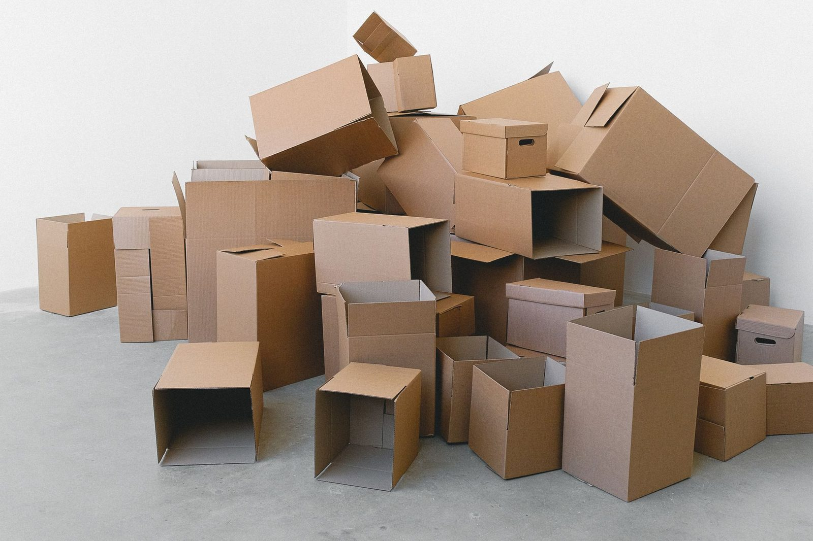

Plain-English disclosure: Inland Empire Junk Removal Quotes is a referral service, not a junk removal company. We pass your request to independent local providers who can contact you. We don't do the work, and we can't vouch for any provider's pricing, insurance, or disposal practices, so please check before you hire.
Junk removal services we can help you find
Furniture & Appliance Removal
Couches, recliners, mattresses, dressers, tables, refrigerators, washers, dryers, and other bulky items, carried out from wherever they sit, not just from the curb. Appliances with refrigerant, like fridges, freezers, and AC units, need to go to a facility that can handle them safely, so ask where they'll end up.
Learn moreGarage & Home Cleanouts
Clearing out a packed garage, attic, spare room, or the whole house. Crews can haul everything at once, or work around items you want to keep. Tell providers roughly how much there is (a few items, a pickup load, a full garage) so quotes are accurate.
Learn moreYard Waste Removal
Branches, brush, palm fronds, old sod, dirt, and leftovers from landscaping projects. Good for cleanups that are too big for your green-waste bin, or for clearing out overgrowth before fire season.
Learn moreConstruction Debris Removal
Drywall, lumber, flooring, cabinets, tile, and other leftovers from a remodel or DIY project. Concrete, dirt, and roofing are heavy, so mention them up front. They often cost more to haul and may need a different truck or trailer.
Learn moreHot Tub & Shed Removal
Taking apart and hauling away old hot tubs, spas, sheds, playsets, and similar structures. Before the crew arrives, the hot tub's power should be disconnected by a qualified electrician. Larger demolition jobs may need a licensed contractor.
Learn moreEstate & Move-Out Cleanouts
Emptying a home after a move, a sale, or the loss of a loved one, or between tenants. Many providers can set aside items for donation or recycling, and some will sweep out the space when they're done.
Learn moreHow it works
- Tell us what needs to go: the items, roughly how much, where they are (curb, garage, inside, upstairs), and when you need it done.
- We match you with independent junk removal providers who serve your city.
- Compare quotes and hire whoever you choose, or nobody at all.

Cities we cover
- San Bernardino junk removal
- Fontana junk removal
- Rialto junk removal
- Redlands junk removal
- Highland junk removal
- Colton junk removal
- Yucaipa junk removal
- Rancho Cucamonga junk removal
- Riverside junk removal
- Ontario junk removal
Tips before you hire a junk removal service
- Get two or three quotes, and make sure each one says what's included: loading, carrying from inside or upstairs, sweeping up, and disposal or recycling fees.
- Ask how pricing works (by truck volume, by item, or by weight) and whether the price can change once the crew sees the load.
- Ask for proof of liability insurance, especially if the crew will be working inside your home.
- For demolition (sheds, decks, built-in spas), ask whether the company holds a contractor's license and look it up at cslb.ca.gov.
- Ask where the load goes. A hauler who dumps illegally to save on fees is a red flag.
- For just one or two bulky items, check with your city's trash service first. Many offer bulky-item pickups.
- Keep hazardous materials (paint, chemicals, batteries, propane) separate. Most haulers can't take them.
Frequently asked questions
Is this service free?
Yes. Requesting quotes through this site is free, and you don't have to hire anyone.
Are you a junk removal company?
No. We're a referral service that connects you with independent local junk removal providers. We don't haul anything ourselves.
How much does junk removal cost?
It depends mostly on how much space your items take up in the truck, plus what they are (heavy materials like concrete, dirt, or roofing cost more), how far they have to be carried, stairs, and local disposal fees. Photos and an honest description of the amount help you get accurate quotes. Comparing more than one quote is the best way to know what's fair.
What won't junk haulers take?
Most won't take hazardous materials such as paint, solvents, motor oil, pesticides, pool chemicals, propane tanks, car batteries, or anything that might contain asbestos. Your county's household hazardous waste program can usually take those. Ask the provider for its list before the pickup.
Do I need to be home for the pickup?
Not always. If everything is outside or in an unlocked garage, some providers can do the job while you're away. Agree on the price and the exact items ahead of time.
Where does my stuff go?
It depends on the provider. Reputable haulers take loads to licensed transfer stations, landfills, recyclers, and donation centers. If donation or recycling matters to you, ask about it when you compare quotes.